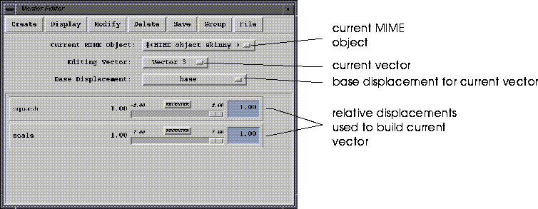
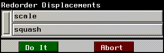

Generating and editing vectors is an important part of the MIME animation process.
The Vector Editor is used to create new vectors that can be used in generating an action:
Using the Vector Editor

Create
Create New MIME Object
Creates a new MIME Object. When you choose this command, a list of objects currently loaded into N-Geometry is displayed.
Create New Vector
Creates a new MIME vector for the current MIME object.
To create a MIME vector, you must specify the following:
1. Make sure the N-Geometry window is open
Duplicate Vector
Creates a copy of another vector.
Display
Controls when the object is redisplayed in N-Geometry when the sliders are moved.
Redisplay
Update the display only when requested. If you choose Auto Redisplay Off (below), you can refresh the N-Geometry display with this command.
Auto Redisplay
Refreshes the N-Geometry display every time the slider is moved.
Auto Redisplay Off
Suppresses refresh of the display. This is useful if you are working with very large objects or want to redisplay the object periodically while adjusting the sliders. If Auto Redisplay Off is selected, (Click-L) on the Redisplay button to force a redisplay.
Modify
Rename
Rename a vector associated with the current MIME object.
Add Displacements
Adds selected displacements to the current vector.
Remove Displacements
Removes selected displacements from the current vector.
Reorder Displacements
Reorders the displacements associated with the current vector.

(Click-L) and on a displacement and drag up or down to change its position.
The new displacement order is resaved automatically.
Delete
Delete MIME Object
Deletes the selected MIME object.
Delete Vector
Deletes selected vectors from their parent MIME object.
Save
Save Current Vector
Saves the current vector in its current state (to memory).
You also need to save any newly created vectors before they can be used in an action.
Group
Clear Group
Clears all referenced MIME objects (and any associate vectors or waves) from memory.
Read Group
Load a group, which typically contains the MIME Object and any saved vectors and waves. A group is essentially a UNIX directory.
Save Group
Saves a group, which contains the MIME Object and any referenced vectors and waves.
For each action, the following files are saved:
action-name.dat
File
Save Vector RSD
Export a single vector in RSD file format. (Creates the .grp, .mat, .ply, and.rsd files for the vector).
Save Vector RSD (Flat Polygon)
Similar to Save Vector RSD, except with a single normal per polygon (rather than the multiple normals saved with Save Vector RSD above).
Save Vector
Saves a description of the vector to file.
Read Vector
Load a vector description file from file.
Copyright © 1996, Nichimen Graphics Corporation. All rights reserved.